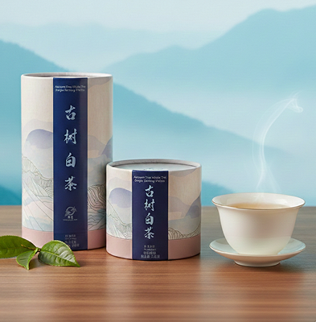
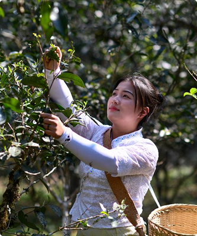
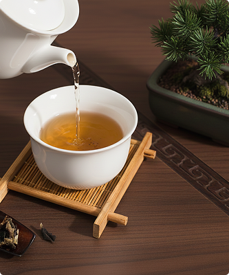
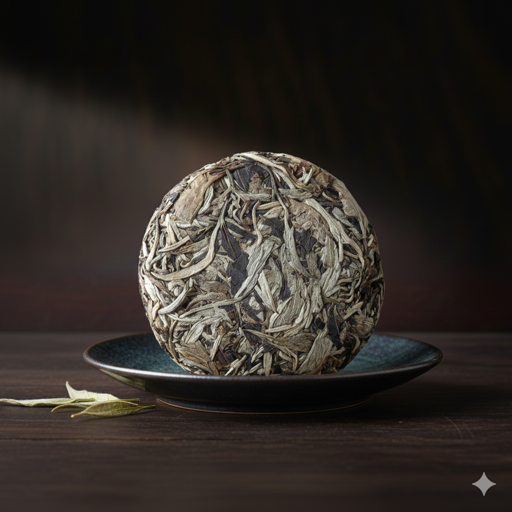
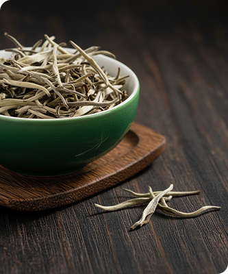

Product Details

Ancient Tree White Tea-White Tea-Ancient Tree-Tea Cake
Tranquil sky
Details
"Ancient Tree White Tea", also known as Moonlight White, is a special type of tea originating from Yunnan Province, China. It is made from tender leaves and buds harvested from high mountains. The production process emphasizes handcrafting and natural fermentation, preserving the tea's natural characteristics, and is completed through sunlight drying.

Source
It is made from one bud and two or three leaves from ancient high mountain trees. The climate and soil conditions in Yunnan Province provide an excellent environment for the growth of white tea.

Appearance
It has a small, round cake-like shape, tightly compressed and evenly formed. The bud heads are plump, with silvery-white pekoe that is neat and well-proportioned.

Flavor
The tea liquor is full-bodied, rich, mellow, and refreshing, with floral, fruity, and honey-like aromas, and it possesses a relatively gentle character.
Quality Characteristics
of Ancient Tree White Tea
Appearance
Ancient tree white tea is made from vine shoot buds, resulting in slender, elongated leaves. The bud heads are plump, covered in silvery-white pekoe, with a neat and well-proportioned appearance and high sweetness.
Aroma
It has a fresh and rich fragrance with notes of floral, fruity, and honey-like scents.
Tea Liquor
The liquor of Moonlight White tea presents a pale yellow to amber hue, clear and bright.
Infusion Resistance
From the 2nd to 3rd infusion, the inner substances begin to release, with noticeable sweetness. This can last until around the 20th infusion. After the 20th infusion, the color of the liquor gradually lightens, the sweetness diminishes, and a watery taste emerges.
Service Commitment
We operate with integrity as our foundation and are committed to providing you with high-quality ancient tree white tea. If you have any questions or needs, please feel free to contact our customer service team. We are dedicated to serving you wholeheartedly. Thank you for choosing our products and joining us in savoring the unique charm of white tea.

A taste of nature
and history
Traveling through millennia, Ancient Tree White Tea carries a unique character and quality. Each leaf is a witness to time, every drop of tea a result of meticulous care. Rich in texture, lingering in sweetness, and abundant in aroma—savor the ancient charm and experience the profound allure of white tea. In dialogue with time, in harmony with nature, Ancient Tree White Tea embodies the elegance of enduring years.
Bold and rich
like a vintage wine
We adhere to traditional methods, carefully sun-drying the tea leaves under natural sunlight. This process not only gives the tea its distinctive appearance but also preserves its rich and complex flavors within.
The whisper
of ancient trees
Pure and rich liquor, clear and bright in appearance, with a mellow texture and long-lasting sweet aftertaste. Each sip of Ancient Tree White Tea is a taste of nature, and every leaf is a tribute to history.